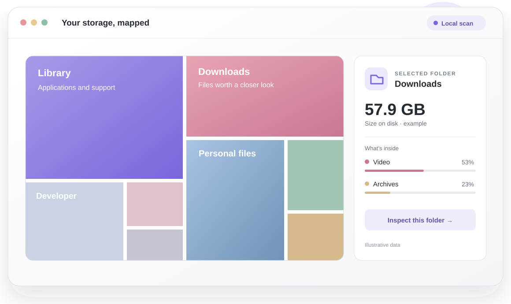
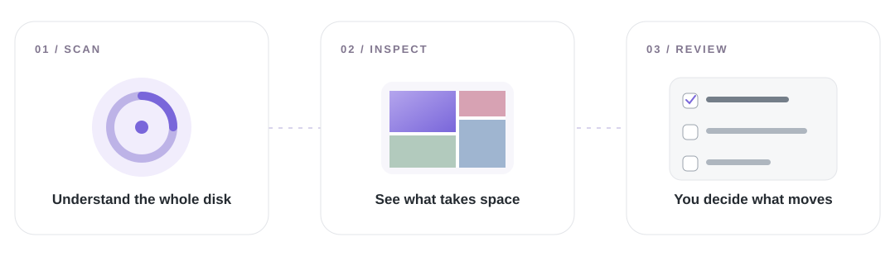
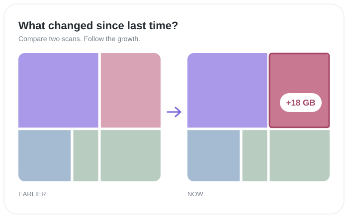

Understand the whole disk
Get a local map of the folders using space.
See what fills your Mac. Follow the big folders. Review everything before it moves to Trash.

A visual concept with illustrative data. Product screenshots should use a real scan.
DiskMap gives the scan a shape you can explore. Select a folder to understand it, then choose what belongs in Cleanup.

Get a local map of the folders using space.
Open a folder and follow its largest contents.
Stage candidates, review the queue, then confirm.
Make the visuals useful: one storage map, direct inspection, honest explanations, and a queue you review before anything moves.
Save a snapshot, scan again later, and see which folders grew. The website can reveal this with a quiet before-and-after transition.

Know what is using space. Keep what matters. Review the rest with confidence.
Explore the concept ↑